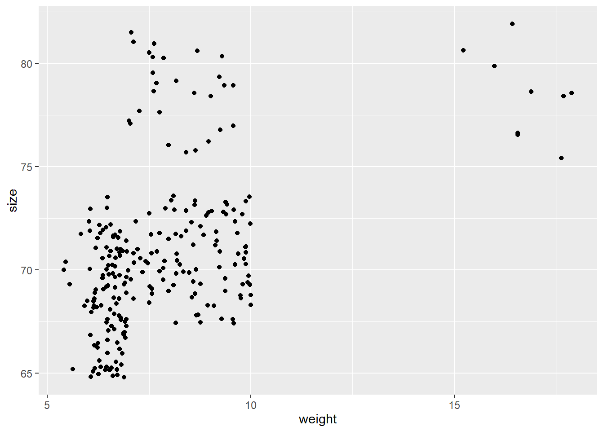

Chapter 3 Introduction to data visualization in GGPLOT2
Structure used by ggplot is basic.Identify data, specify a mapping, and then choose an appropriate geometry to display data. + is the key to constructing sophisticated ggplot2 graphics. It allows you to start simple, then get more and more complex, checking your work at each step.
aesthetic = variable describing which variables in the layer data should be mapped to which aesthetics used by the paired geom/stat. The expression variable is evaluated within the layer data, so there is no need to refer to the original dataset (i.e., use ggplot(df,aes(variable)) instead of ggplot(df,aes(df$variable))). The names for x and y aesthetics are typically omitted because they are so common; all other aesthetics must be named.

To see the individual points, specify the geometry that you would like to use. For X,Y data, X, Y, … List of name value pairs. Elements must be either quoted calls, strings, onesided formulas or constants. we can use geom_point().

## `geom_smooth()` using method = 'loess' and formula 'y ~ x' Add other features of the geom. Try playing around with shape=, size=, alpha=.
For shape, use integer values from 0 to 20 (although there are many others to choose from).
For size, use positive non-zero values (non-integers are OK).
For alpha, use values from 0 to 1. You can use more than one of these at a time.
Just separate them with commas in the geom statement.
We can also add nice (or more detailed) labelling. To do this we just need to add the labs component to the overall statement (like adding the geom_point() or geom_smooth).
Add other features of the geom. Try playing around with shape=, size=, alpha=.
For shape, use integer values from 0 to 20 (although there are many others to choose from).
For size, use positive non-zero values (non-integers are OK).
For alpha, use values from 0 to 1. You can use more than one of these at a time.
Just separate them with commas in the geom statement.
We can also add nice (or more detailed) labelling. To do this we just need to add the labs component to the overall statement (like adding the geom_point() or geom_smooth).
## `geom_smooth()` using formula 'y ~ x'## `geom_smooth()` using method = 'loess' and formula 'y ~ x'

The boxplot compactly displays the distribution of a continuous variable.
and coord_flip flips the x axis to y and reverse


Reorder is a generic function. The “default” method treats its first argument as a categorical variable, and reorders its levels based on the values of a second variable, usually numeric.

stat_summary operates on unique x; stat_summary_bin operates on binned x. They are more flexible versions of stat_bin(): instead of just counting, they can compute any aggregate.
ggplot(koala, aes(x=sex,y=tail))+geom_boxplot()+
stat_summary(fun.y = mean,
geom="point",
size=3,color="blue")## Warning: `fun.y` is deprecated. Use `fun` instead.
Reverse the condition logic Its actually very simple with R and dplyr. Its !(exclamation mark). And, it goes like this.
koala%>%
filter(!state=="New South Wales")%>%
ggplot(aes(state,weight))+
geom_boxplot(aes(x=state, y=weight)) +
stat_summary(fun.y = mean,
geom="point",
size=3,color="blue")## Warning: `fun.y` is deprecated. Use `fun` instead.